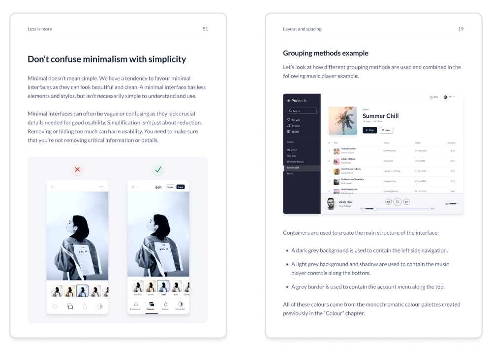
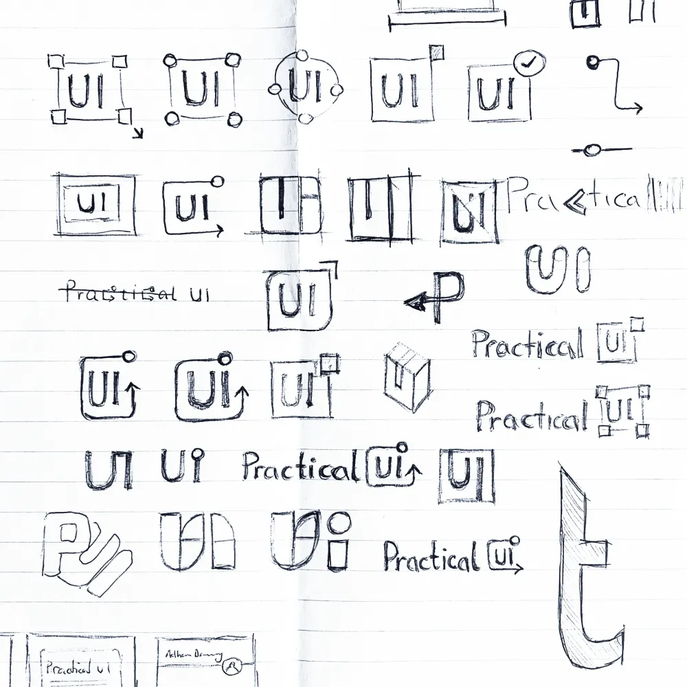
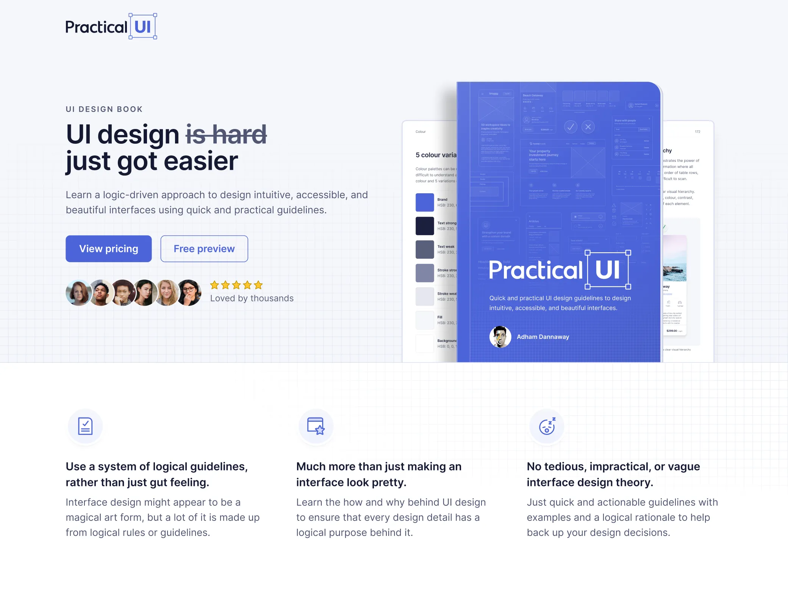

Llevo años siguiendo a Adham; siempre ha sido una gran inspiración. Su libro es claro, conciso y repleto de consejos sobre diseño visual y de interacción
Mi libro de diseño de UI
Interfaz de usuario práctica
Noviembre de 2022
Tras dos décadas trabajando como diseñador de productos, quise documentar mi enfoque lógico para el diseño de UI. Dediqué miles de horas a crear un libro sobre diseño de UI y aquí les dejo un breve vistazo a cómo lo hice.





¿Por qué escribí el libro?
Con los años, me he dado cuenta de que la mayoría de mis decisiones de diseño de interfaz de usuario se rigen por un sistema de reglas lógicas. No se trata de talento artístico ni intuición mágica, sino de reglas sencillas. De hecho, son más bien directrices útiles que reglas estrictas.
Las directrices se basan principalmente en las mejores prácticas convencionales, que parecen haberse olvidado con el paso de los años. Muchas de ellas se basan en el funcionamiento de nuestro cuerpo: cómo nuestros ojos perciben las cosas, cómo nuestro cerebro las interpreta y cómo interactuamos con una interfaz de usuario.
Ojalá hubiera conocido estas pautas cuando empecé en el diseño de productos, que me habrían ahorrado muchos años de investigación y experimentación. Espero que te ayuden a adquirir años de experiencia en diseño visual y de interacción en cuestión de horas.

Un libro creado íntegramente en Figma
Quizás te sorprenda saber que creé este libro en Figma y lo exporté como archivo PDF. Esto funcionó a la perfección, ya que necesitaba incluir muchos ejemplos visuales de diseño.
Creé cada ejemplo de diseño visual como un componente. Creé plantillas reutilizables para las páginas del libro e incorporé los ejemplos en cada página. Esto facilitó y agilizó la actualización de los ejemplos.


El sistema de diseño
Crear el libro en Figma me permitió crear un sistema de diseño sencillo con componentes, plantillas y estilos compartidos para agilizar mi flujo de trabajo. Creé una paleta de colores, una escala tipográfica y opciones de espaciado para mejorar la coherencia y agilizar la toma de decisiones.
También creé una pequeña biblioteca de componentes reutilizables para crear los ejemplos de diseño visual del libro. Disfruté mucho diseñando los ejemplos y fue una excelente manera de demostrar las enseñanzas del libro. Muchas de las pautas del libro tratan sobre la creación de un sistema de diseño simple pero potente.
Desde la publicación del libro, he desarrollado su sistema de diseño para crear un sistema de diseño Figma completo . Tras estudiar cientos de sistemas de diseño a lo largo de los años, quería compartir lo que he aprendido al corregir algunos de los problemas que veo en muchos sistemas de diseño populares.

La marca
Creé una marca simple y neutral para asegurarme de que el contenido fuera el centro de atención. Aquí hay algunas consideraciones que tuve en cuenta al crear la marca:

Una imagen vale más que mil palabras
Intenté que este libro fuera lo más conciso y práctico posible para ayudarte a comprender rápidamente la información innecesaria. Una imagen vale más que mil palabras, así que creé numerosos ejemplos visuales para ilustrar los conceptos con mayor rapidez y hacer que la lectura sea ágil y sencilla.

La página de destino
Para diseñar la página de destino, utilicé mi sistema de diseño de UI práctico , junto con las pautas de diseño que se enseñan en el libro. Creé la página de destino con Elementor, un creador de sitios web para WordPress. Es relativamente rápido y fácil de usar, cuenta con muchas plantillas personalizables y una versión gratuita.
Adham hace un trabajo increíble al descomponer temas complejos en lecciones fáciles de entender. Es un recurso excelente para quienes buscan mejorar sus diseños.
Como ingeniero, el libro me pareció muy práctico y fácil de seguir. Descomponer el diseño de interfaces en reglas lógicas es una genialidad.
Una de las preguntas más frecuentes que me hacen los estudiantes de diseño y diseñadores que inician su carrera es "¿cómo puedo mejorar en el diseño de interfaz de usuario?". Nunca he encontrado un solo recurso que pueda compartir para ayudarles a mejorar estas habilidades. Eso acaba de cambiar. Conseguí mi ejemplar de Practical UI de Adham Dannaway y,
Diseñador de la semana: @AdhamDannaway 🎨 Llevo años siguiendo a Adham, pero hoy publica una nueva guía llamada Practical UI que reúne los fundamentos para diseñar mejores interfaces. Si diseñas o creas interfaces de usuario, ¡apoya el trabajo de Adham!www.practical-ui.com
Confesión: Antes era pésimo en diseño de UI. Cuando descubrí la disciplina del Diseño UX, pensé que podría salir adelante simplemente investigando usuarios y dibujando wireframes. Eso no duró mucho. Rápidamente me di cuenta de que la mayoría de las empresas en las que quería trabajar no tienen diseñadores de UI dedicados. En cambio, esperan que los diseñadores de UX lleven las ideas desde la concepción hasta la implementación, incluyendo la investigación, los wireframes y el diseño de UI. Esto me frustraba porque creía sinceramente que el diseño visual era una habilidad con la que se nace. Sinceramente, pensaba que mi única opción era ser investigador de usuarios porque se me daba fatal hacer que los diseños de UI parecieran profesionales y atractivos. ¿Cómo podía alguien como yo, con formación en Informática, aspirar a convertir mis wireframes en una interfaz de usuario pulida y de aspecto profesional? Me llevó mucho tiempo, pero una vez que descubrí que era una habilidad que podía practicar y aprender siguiendo reglas simples y lógicas, todo cambió para mí. Si hubiera un recurso que desearía que hubiera existido hace 7 años para enseñarme esas reglas, sería este libro: Practical UI. Practical UI te muestra la lógica y el fundamento de cómo diseñar una interfaz de usuario que no solo sea accesible y usable, sino que también tenga un aspecto profesional. En lugar de decirte "usa principios como el espaciado y la alineación para mejorar tu interfaz de usuario", te muestra paso a paso CÓMO aplicarlos de forma práctica. Este es el recurso que desearía haber tenido hace tantos años, cuando pensaba que ser bueno en diseño de interfaz de usuario era una habilidad innata. El diseño de interfaz de usuario es una habilidad práctica que se puede practicar y aprender, y recomiendo este libro encarecidamente para ayudarte en el proceso si quieres desarrollarla. Un agradecimiento especial a Adham Dannaway por crear un recurso tan increíble, conciso y práctico. Read mor

Mi sistema de diseño de Figma
sistema de diseño

Mi libro de diseño de UI
Libro

Mi sistema de diseño de Figma
sistema de diseño